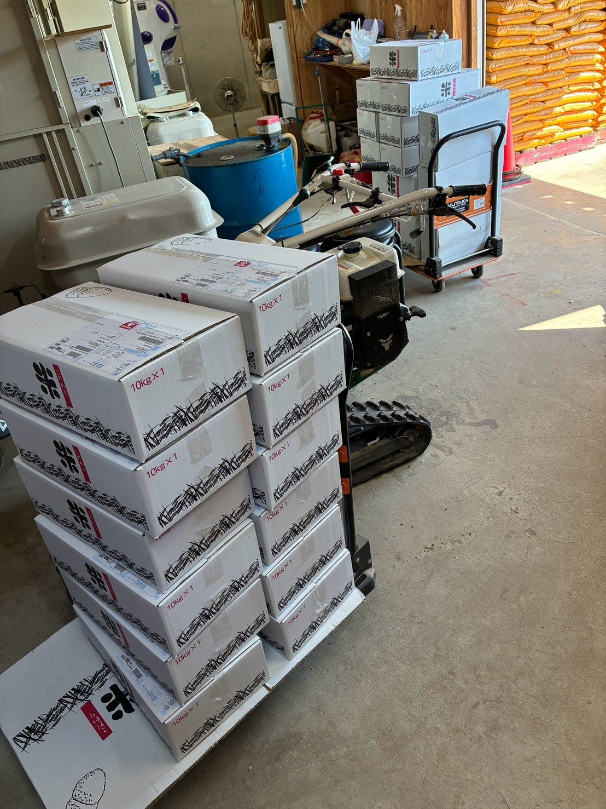
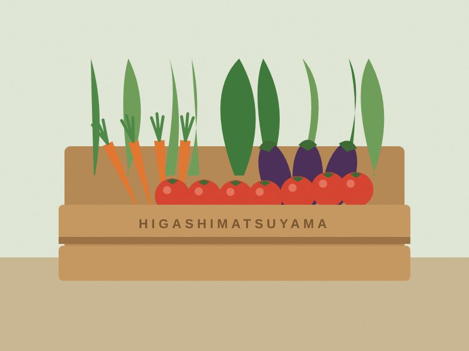
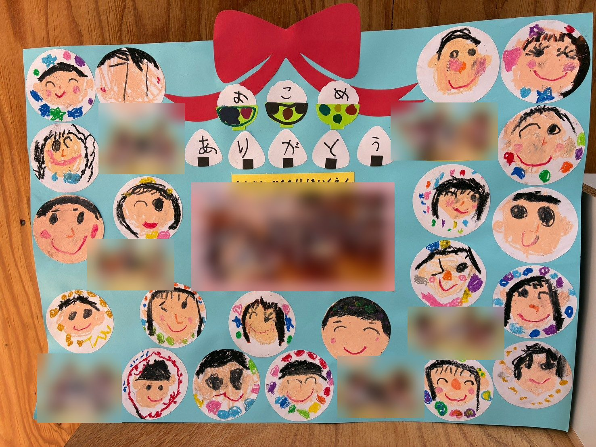
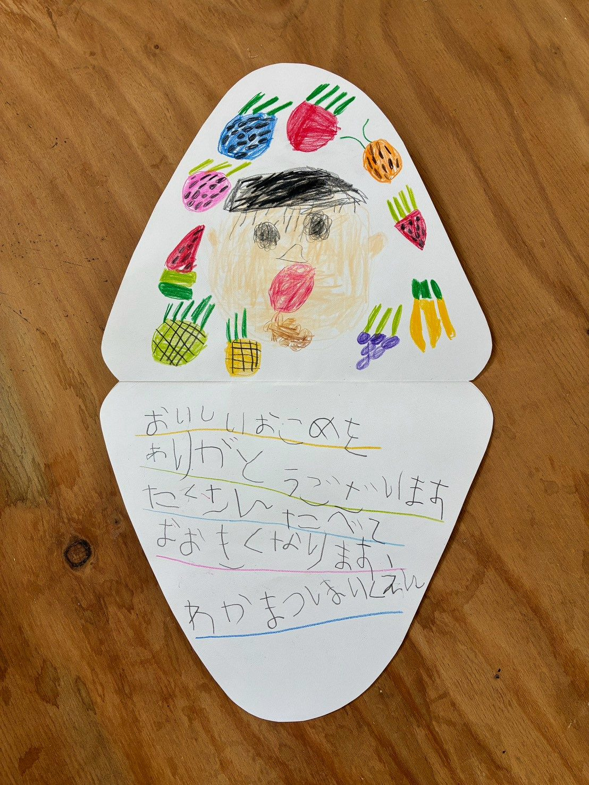
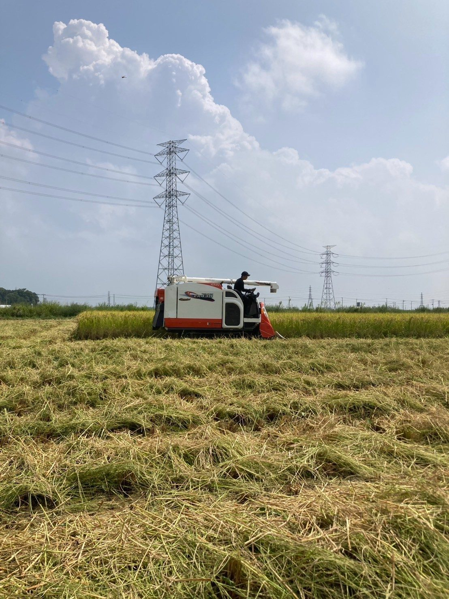
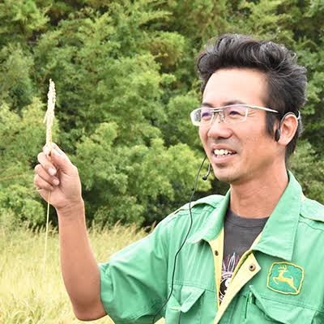
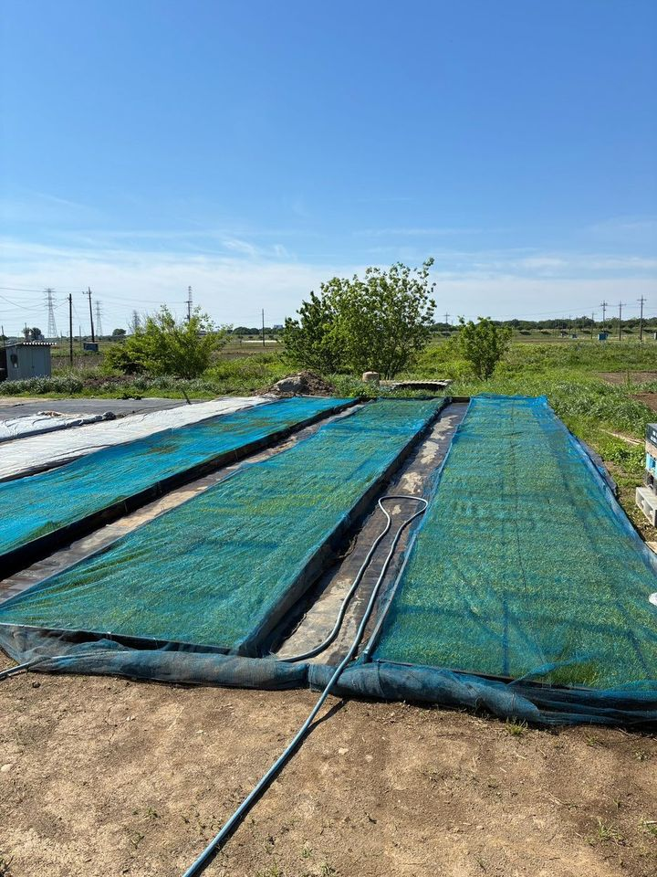
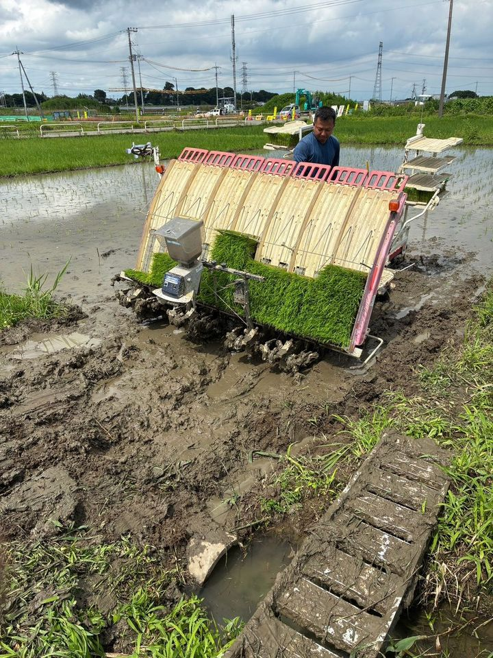
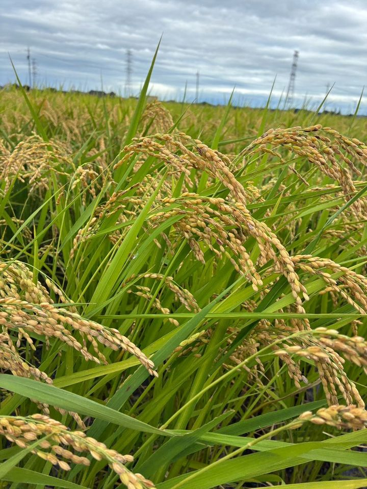
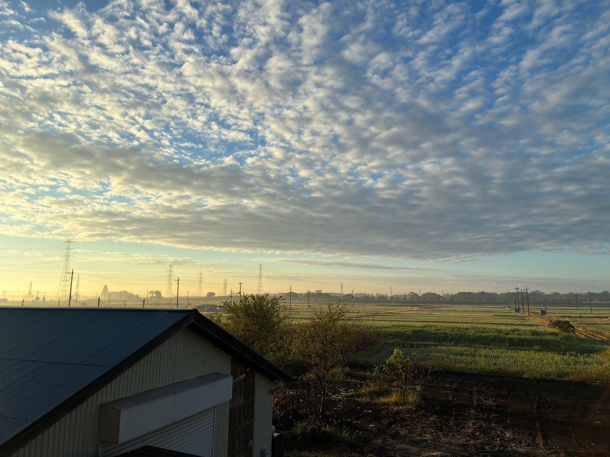

お米をお届けした保育園の子どもたちから、うれしいお便りが届きました。「たくさんたべて おおきくなります」。この言葉が、私たちの田んぼづくりの原動力です。


ユタカ農場は、埼玉県東松山市で田んぼ26町・畑3〜4町を耕す農業法人です。土と水と生きものの力を活かし、農薬・化学肥料に依存しない栽培に挑戦しながら、これから農業を始める若い世代が「ここなら挑戦できる」と思える場所づくりに取り組んでいます。
網本式有機稲作を軸に、田んぼの生態系そのものを育てる米づくりを実践。安心して食べられるお米を、次の世代の田んぼとともに残します。
「農業をやってみたい」という若い人たちが、技術も、仲間も、暮らしも手に入れられるように。現場で学び、独立まで伴走します。
都市に集中しなくても、自然とともに豊かに暮らせる地域へ。田んぼと畑を起点に、人が集まり、学び、めぐる里山をつくります。

私たちの米づくりは、25年以上にわたり有機農業に取り組み、有機稲作にこだわり続けてきた網本欣一氏の直接指導のもとで行っています。教科書ではなく、田んぼで積み重ねられてきた知恵と技術。それを受け継ぎ、26町の田んぼで実践しています。


SPRING 春｜土と苗をつくる [網本式の土づくり・苗づくりのポイントを記載]
EARLY SUMMER 初夏｜田植え [田植えの時期・方法を記載]
AUTUMN 秋｜稲刈り・収穫 [収穫・乾燥・出荷の流れを記載]「風の谷」は、安宅和人氏が提唱する、都市に集中しなくても自然とともに豊かに暮らせる“残すに値する未来”をつくろうという構想です。私たちは、東松山の田んぼと畑を舞台に、その風の谷をかたちにしようと奔走しています。

農業は、きつい・儲からない・閉じている。そんなイメージを、私たちは変えたい。最新の知恵と、自然の力と、仲間がいれば、農業はもっと自由で、もっとおもしろい仕事になります。
田んぼ見学・農業体験、研修・就農のご相談、お米のご注文、自治体・企業さまからの視察や取材まで、お気軽にお問い合わせください。